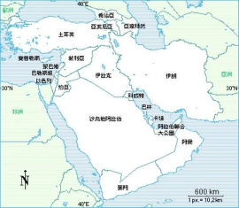

2007 年全国硕士研究生入学统一考试思想政治理论试题
一、单项选择题：1～16 题，每小题1 分，共16 分。下列每题给出的四个选项中，只有一个选项是符合题
目要求的。请在答题卡上将所选项的字母涂黑。
1.“风定花犹落，鸟鸣山更幽”形象地表达了动和静的辩证关系是：
2.“挟泰山以超北海，语人曰吾不能，是诚不能也。为长者折技，语人曰吾不能，是不为也，非不能也”。《孟子》中的这段话启示我们，做事情时要区分可能性和不可能性，二者的区别在于：
3.马克思根据人的发展状况把人类历史划分为三大形态。它们是：
4.列宁说：“意识到自己的奴隶地位而与之斗争的奴隶，是革命家。没有意识到自己的奴隶的地位而过着默默无言、浑浑噩噩，忍气吞声的奴隶生活的奴隶，是十足的奴隶。对奴隶生活的各种好处津津乐道，并对和善的好主人感激不尽以至垂涎欲滴的奴隶是奴才，是无耻之徒。”这三种奴隶的思想意识之所以有如此大的差异，是由于：
5.货币的本质是：
6.在资本主义社会，农业资本家和土地所有者之间争夺的是：
7.作为商品的资本是：
8.在中国共产党的历史上，第一次鲜明地提出“马克思主义中国化”的命题和任务的会议是：
9.国民革命失败后，毛泽东在八七会议上提出的著名论断是：
10．1957 年，毛泽东在《关于正确处理人民内部矛盾的问题》中指出，在我国，工人阶级与民族资产阶级的矛盾属于人民内部的矛盾。如果处理不当，会变成：
11．“三个代表”重要思想的根本出发点和落脚点是：
12.社会主义道德建设的核心是：
13.中国共产党和中国政府始终尊重和保护人权，认为首要的人权是：
14．《中共中央关于构建社会主义和谐社会若干重大问题的决定》指出，社会和谐是中国特色社会主义的：
15.胡锦涛在学习《江泽民文选》报告会上的讲话中指出，我们学习《江泽民文选》必须牢牢把握的主题是：
16.中俄两国互办“国家年”活动是两国最高领导人做出的一项重大政治决定。这表明：
二、多项选择题：17～33 小题，每小题2 分，共34 分。下列每题给出的四个选项中，至少有两个选项是
符合试题要求的。请在答题卡上将所选项的字母涂黑。多选、少选或错选均不得分。
17.关于龙的形象，自古以来就有“角似鹿、头似驼、眼似兔、项似蛇、腹似蜃、鳞似鱼、爪似鹰、掌似虎、耳似牛”的说法，这表明：
18.某地乡村公路边有很多柿子园。金秋时节，农民采摘柿子时，最后总要在树上留一些熟透的柿子。农民们说，这是留给喜鹊的食物。每到冬天，喜鹊都在果树上筑巢过冬，到春天也不飞走，整天忙着捕捉果树上的虫子，从而保证了来年柿子的丰收。从这个事例中，我们受到的启示是：
19.2006 年7 月12 日凌晨，刘翔在瑞士洛桑国际田联超级大奖赛男子110 米栏比赛中，以12 秒88 勇夺冠军，打破了由英国名将科林·杰克逊保持13 年之久的12 秒91 的世界记录。科林·杰克逊在谈起自己已被打破记录时，没有一丝沮丧：“我一点也不失望，正相反，我感到非常兴奋。”他说：“记录本来就是用来被打破的。”这在哲学上的启示是：
20.以人为本是科学发展观的本质和核心。以人为本中的“人”是指：
21.商品的市场价格发生变化：
22.利润率表示全部预付资本的增殖程度，提高利润率的途径有：
23.生产要素市场包括：
24.G-W-G’是：
25.新民主主义革命时期，以国共合作为基础所建立的统一战线有：
26.1942 年，毛泽东在《整顿党的作风》中指出，我们要的是马克思列宁主义的学风。学风问题主要是指：
27.20 世纪50 年代中期，邓小平多次强调，执政的中国共产党必须接受来自几个方面的监督，具体包括：
28.坚持和完善社会主义初级阶段个人收入分配制度，就要规范收入分配秩序，其中包括：
29.依法治国是中国共产党领导人民治理国家的基本方略，其基本要点有：
30.建设社会主义新农村的一项重要任务是培养新型农民，具体措施有：
31.社会主义核心价值体系是建设和谐文化的根本，它的基本内容包括：
32.从2006 年1 月1 日起，我国废止《农业税条例》，这是具有划时代意义的历史事件，它有利于：
33.中非合作论坛是首脑外交的新形式。中国国家主席、副主席和总理及非洲4 国的总统和非洲统一组织秘书长参加了第一届部长级会议并发表讲话；14 个非洲国家的领导人及44 个国家的88 位部长参加了2003 年第二届部长级会议；2006 年的中非合作论坛北京峰会更是吸引了非洲40 多个国家的元首和政府首脑参加。首脑外交对中非关系的重要意义主要表现在：
三、分析题：34-38 小题，每小题10 分，共50 分。要求结合所学知识分析材料回答问题。将答案写在答题
纸相应位置上。
34.成仿吾是无产阶级革命家，马克思主义理论家、教育家，他是由“文化人”成为“革命人”的典型之一，成仿吾到底是个什么样的人呢？作家丁玲在与其谋面之前曾产生过一系列的“合理想象”：“在文学上，他主张浪漫主义，创造社最早就是这样主张的；他是从日本留学回来的，一定很洋气，很潇洒，因为曾见过一些傲气十足的诗人，趾高气扬，高谈阔论；他在国外学军械制造，或许是个庄重严肃之人；他在黄埔军校担任教官；一定有一种军人气概；他曾经跟鲁迅进行过革命文学队伍内部的文学论争，写过火气很重的文
章，是不是有点张飞、李逵式的气质呢？”后来丁玲在陕北见到成仿吾时，第一个感觉就是：“我想象的全错了”，原来，成仿吾是一个“土里土气，老实巴交”的普通人，一个尊重别人、热情、虚心、平等待人的人。丁玲十分后悔：“为什么我单单忽略了他是一个经过长征的革命老干部、红军战士，一个正派憨厚的共产党员呢？”另据老红军杨定华回忆说，在长征中见到的成仿吾完全是士兵的装扮：破旧的棉军衣，斜挎干粮袋，手持着一枝手杖。杨定华说，成仿吾在红军大学当政治教员。有人说出他的名字，但谁也不知道他是文学家。请运用马克思主义认识论基本原理加以分析：
（1）丁玲对成仿吾的“合理想象”为什么“全错了”？
（2）丁玲对成仿吾认识的“转变”过程对我们正确认识事物有何启示？
35.多种经济成分并存是当代资本主义和社会主义共有的经济现象。当代资本主义经济中不仅有私有制经济成分，也有国有制经济成分以及其他经济成分；在社会主义经济中不仅有公有制经济成分，也有私有制经济成分以及其他经济成分。但是资本主义和社会主义的基本经济制度的性质是根本不同的。在分析我国社会主义初级阶段生产资料所有制结构问题时，有人以“八宝饭”为例做了形象比喻：八宝饭中的糯米是主要成分，没有糯米不是八宝饭，但糯米本身并不就是八宝饭；八宝饭里还有其他成分，红枣、莲子、核桃、花生、红豆、砂糖等，没有这些成分也不是八宝饭，但这些东西本身也不同于八宝饭。只有把糯米和其他成分组合在一起并以糯米为主才是八宝饭。结合材料回答问题：
（1）判断一个社会的基本经济制度性质的根本标准是什么？
（2）我国社会主义初级阶段公有制经济和其他经济成分之间是什么关系？
（3）我国社会主义初级阶段基本经济制度优越性的主要表现是什么？
36.减租减息是中国共产党在抗日战争时期解决农民问题的基本政策。减租又称二五减租，即规定地主的地租一律照原租额减收25%，地租的最高额不得超过37.5%。减息的原则是“分半减息”，规定放贷的年利率最高不得超过10%。下表系1942 年至1944 年对北岳、大行等五个抗日根据地调查的
农村各阶层户数及其所占土地的比例（单位：%）
| 阶层 | 地主 | 富农 | 中农 | 贫农 | 雇农 | 其它 |
|---|---|---|---|---|---|---|
| 户数·抗战前 | 3.6 | 7.2 | 28.4 | 54.0 | 5.5 | 1.8 |
| 户数·减租后 | 2.4 | 6.7 | 38.0 | 47.0 | 2.5 | 3.4 |
| 土地·抗战前 | 29.5 | 21.0 | 29.5 | 19.0 | 0.8 | 0.2 |
| 土地·减租后 | 13.5 | 17.5 | 42.5 | 22.5 | 0.6 | 3.4 |
结合材料回答问题：
（1）当地土地流向及农村阶级关系发生了什么变化？
（2）简述实行减租减息政策的意义。
（3）解决农民土地问题是新民主主义革命的一项主要任务。结合此表说明减租减息政策的局限性。
37.结合材料回答问题：
材料1
2000 年，我国国内生产总值超过了原定比1980 年翻两番的目标，这种增长主要是依赖资源的高投入、高消耗来实现的。到2020 年实现国内生产总值再翻两番，是我国实现全面建设小康社会的奋斗目标。我国单位GDP 消耗的资源能源数量远高于发达国家，也高于印度等发展中国家。按现行汇率计算，2003 年我国单位资源的产生水平，只相当于美国的1/10，日本的1/20，德国的1/6。单位产值能耗比世界平均水平高2.4倍，是德国的4.97 倍，日本的4.43 倍，美国的2.1 倍,印度的1.65 倍，是世界上单位产值能耗最高的国家之一。而我国人口众多，人均资源比较贫乏，水资源人均占有量仅相当于世界人均的25%，人均耕地面积不足世界平均不平的50%，石油人均占有储量为世界平均水平的11%，大多数矿产资源的人均拥有量不足世界平均水平的50%。我国环境污染和生态恶化形势十分严峻，1/5 的城市空气污染严重，1/3 的国土面积受到酸雨影响，全国水土流失面积356 万平方公里，沙化土地面积174 万平方公里，90%以上的天然草原退化，生物多样性减少。
材料2
十一五时期资源节约方面的主要指标
| 指标 | 2010年与2005年相比 | 属性（注） |
|---|---|---|
| 单位国内生产总值消耗 | 降低20% | 约束性 |
| 单位工业增加值用水量 | 降低30% | 约束性 |
| 农业灌溉用水有效利用系数 | 由0.45增加到0.5 | 预期性 |
| 工业固体废物综合利用率 | 由55.8%提高到60% | 预期性 |
注：预期指标是指国家期望的发展目标，主要依靠市场主体的自主行为实现。政府要利用各种政策引导社会资源配置，努力争取实现。约束性指标是在预期的基础上进一步明确并强化政府职责的指标，政府要通过合理配置资源和有效运用行政力量，确保实现。
十一五时期环境保护方面的主要指标
| 指标 | 2010年与2005年相比 | 属性（注） |
|---|---|---|
| 耕地保有量 | 减少0.3亿公顷 | 约束性 |
| 主要污染物排放总量 | 减少10% | 约束性 |
| 森林覆盖率 | 增加1.8% | 约束性 |
（1）中国经济发展面临的资源挑战对经济增长方式转变提出何种要求?
（2）按照科学发展观的要求，我国如何建设资源节约型、环境友好型社会？
38.本题为选做题，请在Ⅰ、Ⅱ两道题中选取其中一道作答，若两道都回答，只按第Ι道试题的成绩记入总分。
材料1
截止2005 年底，世界已探明的石油储量为12000 亿桶，其中中东地区为7427 亿桶，约占世界总储量的62%。迄今已探明石油储量居世界前列的5 个国家沙特阿拉伯、伊朗、伊拉克、科威特和阿拉伯联合酋长国都位于波斯湾地区。中东地区石油产量约占世界石油总产量的2/5，出口量约占世界总出口量的2/3。
材料2
二战后中东局势一直动荡不定，各种地区冲突和局部战争此起彼伏，连绵不断。其中仅阿拉伯国家与以色列之间就进行了5 次大规模的战争。而1980 年9 月发生的两伊战争，则整整打了8 年。特别是20 世纪90 年代初的海湾危机和海湾战争更是牵动了整个世界。时至2003 年3 月，美、英又对伊拉克发动了一场“先发制人”的战争，迅速占领了伊拉克。2006 年7 月，黎以之间再次爆发大规模的冲突。至于小规模的武装冲突从未间断过，军事政变、内战和恐怖暗杀等暴力事件也时有发生。可以说，在战后的世界上，没有哪一个地区像中东那样经历如此长期和频繁的战争与冲突。
结合地图和所给材料分析中东地区持续动荡不安的主要根源。

（1）从地图中可以看出，中东地处欧、亚、非三大洲的连接处，占据着十分重要的战略地位。里海、黑海、地中海、红海、阿拉伯海围绕其外缘或深入其内陆，为中东地区与世界各国和地区的联系提供了便利。从黑海进入地中海的通道、连接地中海和红海的苏伊士运河及波斯湾进入阿拉伯海的咽喉要道都具有重要的国际战略意义。因此，在历史的发展过程中，各种矛盾错综复杂，其重要的战略地位使其必然成为各种势力争夺的场所。在冷战时期，中东一直是美、苏两个超级大国激烈争夺的地区。冷战后，美国更是将夺取中东控制权视为其“世界新秩序”的重要一环。（7 分）
（2）中东地区是世界能源的供给中心，是西方国家经济赖以生存的主要能源供应地，这里的能源运输线是西方的“生命线”。因此，谁控制了这一地区，谁就掌握了世界经济的命脉，进而左右国际关系的进程。（2 分）
（3）错综复杂的民族和宗教问题也是影响中东稳定和发展及世界经济政治格局的重要因素。（1 分）
选做题Ⅱ：
坚持包容精神，共建和谐世界。文明多样性是人类社会的基本特征，也是人类文明进步的重要动力。在人类历史上，各种文明都以自己的方式为人类文明进步作出了积极贡献。存在差异，各种文明才能相互借鉴、共同提高；强求一律，只会导致人类文明失去动力、僵化衰落。各种文明有历史长短之分，无高低优劣之别。历史文化、社会制度和发展模式的差异不应成为各国交流的障碍，更不应该成为相互对抗的理由。
我们应该尊重各国自主选择社会制度和发展道路的权利，相互借鉴而不是刻意排斥，取长补短而不是定于一尊，推动各国根据本国国情实现振兴和发展；应该加强不同文明的对话和交流，在竞争比较中取长补短，在求同存异中共同发展，努力消除相互的疑虑和隔阂，使人类更加和睦，让世界更加丰富多彩；应该以平等开放的精神，维护文明的多样性，促进国际关系民主化，协力构建各种文明兼容并蓄的和谐世界。
摘自胡锦涛主席在联合国成立60 周年首脑会议上发表的《努力建设持久和平、共同繁荣的和谐世界》讲话结合材料回答问题：
（1）运用辩证法的观点说明为什么不同文明要“在竞争比较中取长补短，在求同存异中共同发展”。
（2）简述中国坚持走和平发展道路对建设持久和平、共同繁荣的和谐世界的意义。